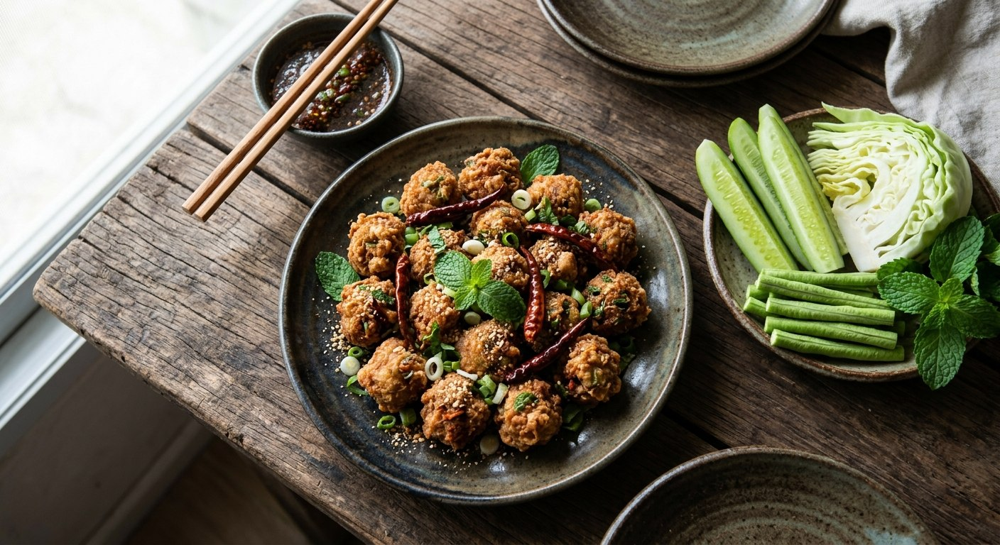

Laab-seasoned pork rolled into balls and fried crisp — the Isaan salad that learned to swim in hot oil.

ลาบทอด is the proof that Isaan cooks never let a good salad sit still. Take laab — minced pork seasoned with lime, fish sauce, chilli and roasted rice — shape it into balls, and fry them. The roasted rice that gives laab its toasted, nutty backbone becomes the crust's texture. Kapook's round-up frames it as the Isaan snack that makes your mouth water before it's even fried.
The seasoning is laab, exactly as laab goes — but with one addition, because lime and fish sauce alone make a mixture that falls apart in the pan. Every source reaches for a binder: Kapook works crisp-fry flour into the meat; Phol kneads in cornstarch; Aroifin skips the binder and goes the other way entirely, rolling each ball in a thick dredge of crisp-fry flour like a croquette.
And Phol has one more flourish: the balls get brushed with beaten egg and rolled in a second round of roasted rice before they hit the oil — a crust of toasted rice that fries into the laab's own flavour, doubled. Dried chillies fry in the same oil and crown the plate. Whatever the coating, the serving never changes: a platter of raw cucumber, cabbage, long beans, mint and basil — the fresh crunch against the fried one.
| Thai | English | Amount |
|---|---|---|
| หมูติดมันบด | Minced pork, fatty | 300 g |
| น้ำมะนาว / น้ำปลา | Lime juice / fish sauce | 2 tbsp / 2 tbsp |
| พริกป่น | Chilli powder | to taste |
| ข้าวคั่ว | Roasted rice | 2 tbsp |
| แป้งทอดกรอบ | Crisp-fry flour | 2 tbsp |
| ใบมะกรูดซอย | Kaffir lime leaves, sliced | 6 |
| ต้นหอม / ผักชีฝรั่ง | Spring onion / sawtooth coriander | 2 each |
| หอมแดง | Shallots | 5 |
| น้ำมันพืช | Vegetable oil | for frying |
| ผักสด | Fresh vegetables | to serve |
Phol's crusted version: 250 g pork, 4 shallots, 2 tbsp each fish sauce and lime, 2 tsp chilli powder, 2 tbsp cornstarch, 4 tbsp roasted rice split between the mix and the egg-washed crust. Aroifin's dredged version: 200 g pork, 4 tbsp each fish sauce and lime, 4 tbsp roasted rice, balls rolled in 200 g crisp-fry flour.
Three coating schools. Kapook binds the flour inside the meat; Phol adds cornstarch, then an egg wash and a roll in extra roasted rice; Aroifin dredges the finished balls in a thick layer of crisp-fry flour. Inside-binder, rice-crust, or heavy dredge — the texture lands differently each way, from soft-crunchy to fully croquette.
The lime-fish ratio. Kapook and Phol balance 2 tbsp lime to 2 tbsp fish sauce; Aroifin doubles both to 4 tbsp each for the same amount of meat. Aroifin's balls are punchier and wetter — which is exactly why that version needs the flour dredge.
Sugar or not. Only Aroifin adds sugar (1 tsp). The others keep laab's savoury-sour line — sugar nudges it toward a snack flavour.
Kaffir leaves. Kapook's six sliced leaves are the only kaffir in the sources — Phol and Aroifin leave them out and stay with the classic laab herb trio. The kaffir version reads more aromatic.
What to fry alongside. Phol and Aroifin fry dried chillies in the same oil and pile them on the balls; Kapook serves the vegetables plain. The fried chilli is the street-stall garnish.
This recipe is translated from the following Thai-language sources. Where they disagree, we've said so.
1. Kapook — "4 เมนูลาบทอด อาหารอีสานกรอบอร่อยน้ำย่อยเดิน" (the recipe used here + the jaew-bong variant) — cooking.kapook.com
2. Phol Food Mafia — "Larb Moo Tod (ลาบหมูทอด)" (cornstarch binder, egg wash + roasted-rice crust) — pholfoodmafia.com
3. Aroifin — "วิธีทำ ลาบทอด สูตรแซ่บถึงเครื่อง ทริค! ปั้นก้อนลาบสวยไม่แตก" (the flour-dredge school) — aroifin.com